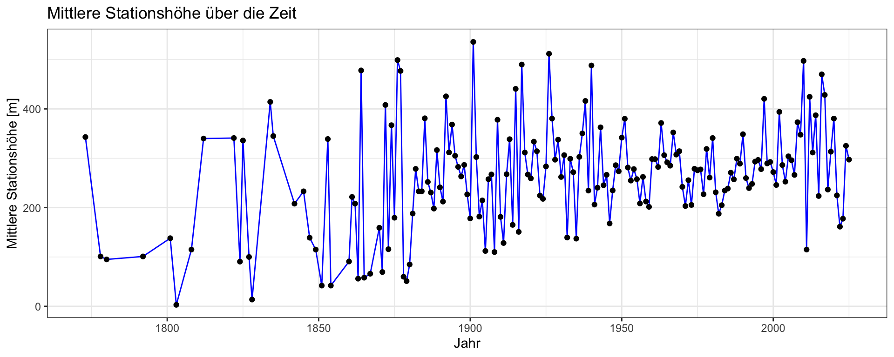
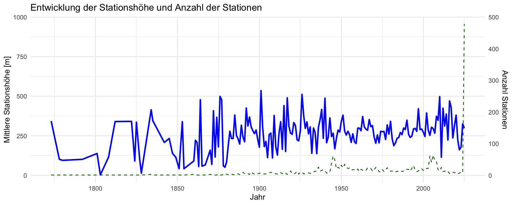

ggplot(mean_elevation_trend, aes(x = year_end, y = mean_height)) +geom_line(color ="blue") +geom_point() +labs(title ="Mittlere Stationshöhe über die Zeit",x ="Jahr",y ="Mittlere Stationshöhe [m]") +theme_bw()

Code
# 1. Gruppieren nach Jahr und berechnen:summary_year <- geo_elevation %>%group_by(year_end) %>%summarise(mean_height =mean(Stationshoehe, na.rm =TRUE),n_stations =n_distinct(Stations_id) )# 2. Plot mit zwei Achsenggplot(summary_year, aes(x = year_end)) +geom_line(aes(y = mean_height), color ="blue", size =1) +geom_line(aes(y = n_stations *2), color ="darkgreen", linetype ="dashed") +# skaliert für zweite Achsescale_y_continuous(name ="Mittlere Stationshöhe [m]",sec.axis =sec_axis(~./2, name ="Anzahl Stationen") ) +labs(title ="Entwicklung der Stationshöhe und Anzahl der Stationen",x ="Jahr" ) +theme_minimal()
Warning: Using `size` aesthetic for lines was deprecated in ggplot2 3.4.0.
ℹ Please use `linewidth` instead.

!! something is wrong with n stations
Code
lm_fit <-lm(Stationshoehe ~ year_end, data = geo_elevation)summary(lm_fit)
Call:
lm(formula = Stationshoehe ~ year_end, data = geo_elevation)
Residuals:
Min 1Q Median 3Q Max
-301.13 -204.06 -48.26 130.02 2661.88
Coefficients:
Estimate Std. Error t value Pr(>|t|)
(Intercept) -442.9304 231.8377 -1.911 0.05617 .
year_end 0.3672 0.1174 3.129 0.00177 **
---
Signif. codes: 0 '***' 0.001 '**' 0.01 '*' 0.05 '.' 0.1 ' ' 1
Residual standard error: 257.5 on 2678 degrees of freedom
Multiple R-squared: 0.003642, Adjusted R-squared: 0.00327
F-statistic: 9.789 on 1 and 2678 DF, p-value: 0.001775
Code
ggplot(median_elevation_trend, aes(x = year_end, y = median_height)) +geom_line(color ="blue") +geom_point() +labs(title ="Mediane Stationshöhe über die Zeit",x ="Jahr",y ="Mittlere Stationshöhe [m]")